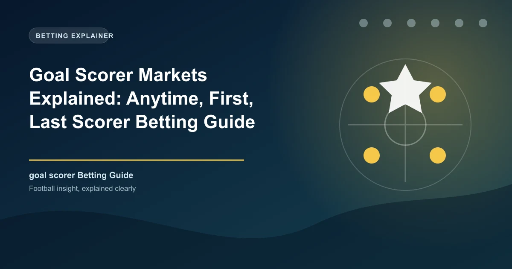

Goal Scorer Markets Explained: Anytime, First, Last Scorer Betting Guide

Goal scorer betting is one of the most popular player proposition markets in football. Whether you back a striker to score anytime or predict who will bag the first goal, these markets offer exciting odds and real value when you know what to look for.
In this complete guide, we explain the different types of goal scorer bets, how odds work, the stats you need to check, and the strategies that separate profitable scorer bettors from those who just guess.
Types of Goal Scorer Bets
There are several ways to bet on goal scorers in football. Each market has its own risk profile and typical odds range:
Anytime Scorer
The most popular scorer market. You back a player to score at any point during the match (regular time, 90 minutes). It does not matter if they score in the 5th minute or the 89th minute — as long as they score at least once, you win. This is the easiest scorer bet to land and offers the shortest odds.
First Goalscorer
You predict which player will score the first goal of the match. This is harder to predict because only one player can score first, but the odds are significantly higher. If your selected player does not score first but scores later, you lose the bet.
Last Goalscorer
You predict which player will score the final goal of the match. Similar difficulty to first scorer, but some bettors believe late goals follow different patterns (substitutes, defensive tiredness).
Player to Score 2+ Goals
You back a player to score two or more goals in the match. This is a higher-risk bet with bigger odds. It works best when a strong striker faces a very weak defence.
Player to Score Anytime & Team to Win
A combo bet: the player must score AND their team must win. Higher odds than a straight anytime scorer bet because you are adding the match result condition.
| Market | Typical Odds Range | Hit Rate | Best For |
|---|---|---|---|
| Anytime Scorer | 1.80 - 4.00 | 35-50% | Consistent value bets |
| First Goalscorer | 4.00 - 12.00 | 8-15% | Higher risk, bigger reward |
| Last Goalscorer | 4.50 - 14.00 | 7-13% | Similar to first scorer |
| 2+ Goals | 4.00 - 10.00 | 10-20% | Dominant strikers vs weak defences |
| Anytime & Team Win | 2.50 - 6.00 | 25-40% | Favourite's main striker |
How to Find Value in Goal Scorer Markets
The key to profitable scorer betting is finding players whose odds are higher than their actual chance of scoring. Here are the factors that influence a player's scoring probability:
1. Penalty Duties
The single biggest factor. A penalty taker in a team that wins 2+ penalties per game has a built-in scoring advantage. Always check who takes penalties for each team — and who takes them if the primary taker is absent.
2. Minutes Played
A player who consistently plays 90 minutes has more time to score than one who is frequently substituted at 60 minutes. Check average minutes per game before placing scorer bets.
3. Shots on Target
Players who generate high volumes of shots on target are more likely to score. Look for players averaging 2+ shots on target per game. This stat correlates strongly with scoring frequency.
4. Expected Goals (xG)
xG measures the quality of chances a player receives. A player with high xG but low actual goals may be due a scoring run (underperforming their chances). A player with low xG but high goals may be overperforming and could regress.
5. Opponent's Defensive Record
Check how many goals the opposing team concedes, especially at home or away. A striker facing a defence that concedes 2+ goals per game has a much higher scoring chance than one facing a top-four defence.
The Scorer Value Formula
A player offers value in the anytime scorer market when:
- They take penalties (or are likely to if the primary taker is absent)
- They average 2+ shots on target per game
- Their xG per 90 is 0.40 or higher
- Their team's opponent concedes 1.3+ goals per game on average
- The odds offered are 2.50 or higher for a player with a 40%+ scoring rate
Best Leagues for Goal Scorer Betting
Scorer markets are most predictable in leagues with high scoring rates and dominant strikers:
| League | Goals Per Game | Why It Works for Scorer Bets |
|---|---|---|
| Bundesliga | 3.1+ | Highest scoring major league, open football |
| Eredivisie | 3.0+ | Attacking philosophy, weak defences |
| Premier League | 2.7+ | High quality strikers, competitive matches |
| La Liga | 2.5+ | Technical football, star forwards |
| Serie A | 2.6+ | Tactical, but elite strikers thrive |
Pro Tip: Target Weak Defences
The most profitable scorer bets come from targeting elite strikers against weak defences. Check the bottom-half teams in any league for sides conceding 1.5+ goals per game, then back the opposing team's main striker to score anytime.
First Goalscorer vs Anytime Scorer: Which Is Better?
This is a common debate among football bettors. Here is a honest comparison:
| Factor | Anytime Scorer | First Goalscorer |
|---|---|---|
| Typical Odds | 2.00 - 3.50 | 5.00 - 10.00 |
| Hit Rate | 35-50% for top strikers | 8-15% for top strikers |
| Variance | Lower, more consistent | Higher, more volatile |
| Best Strategy | Flat staking on value picks | Skinny odds on in-form players |
| Long-term Profitability | Easier to achieve | Harder but possible with discipline |
For most bettors, anytime scorer offers better long-term value because the hit rate is higher and you can compound small edges over many bets. First scorer is better suited for bettors who are comfortable with higher variance and larger swings.
Scorer Betting Strategies
Strategy 1: The Penalty Taker Play
Always check who takes penalties. A reliable penalty taker in a team that earns frequent penalties has a scoring floor that other players do not. Even if they have a quiet game, one penalty can win your bet.
Strategy 2: The Form Striker
Back strikers who have scored in 3+ of their last 5 matches. Form streaks in scoring are real and measurable. Players in good form tend to maintain confidence and continue finding the net.
Strategy 3: The Weak Defence Exploit
Identify the weakest defences in a league (bottom 5 for goals conceded) and back the opposing team's main striker. This strategy works consistently across all major leagues.
Match: Manchester City vs Luton Town
Luton's away record: Conceding 2.1 goals per game on the road
Haaland's stats: 0.8 goals per game, penalty taker
Bet: Haaland Anytime Scorer @ 1.65
Result: High-probability value play based on defensive mismatch
Strategy 4: The "Both Teams Score" Combo
Combine anytime scorer picks with BTTS bets. If you expect both teams to score, back one scorer from each side. This gives you two ways to win from the same match analysis.
Common Mistakes to Avoid
Always check the starting lineup before placing scorer bets. A star striker who is benched or rested will not score. Check team news 30-60 minutes before kickoff for the most accurate information.
First scorer odds of 12.00 look tempting, but they represent a roughly 8% chance. Stick to markets where you have a genuine analytical edge, not just big odds.
If a player is commonly substituted at 60 minutes, they have 30 fewer minutes to score. Check average minutes played before backing a scorer who does not play full matches.
A player who scores lots of goals but has low xG may be overperforming and due a dry spell. A player with high xG but few goals may be undervalued by bookmakers.
Building a Scorer Betting Portfolio
For long-term profitability, treat scorer betting as a portfolio rather than individual bets:
- Core bets (60%): Anytime scorer on penalty takers at 2.00-3.00 odds. High hit rate, steady returns.
- Value bets (30%): Anytime scorer on in-form players at 3.00-4.50 odds against weak defences.
- Speculative bets (10%): First scorer or 2+ goals at 5.00+ odds on favourable matchups.
Find Today's Best Scorer Picks
Our AI-powered predictions analyse scoring data across all major leagues. Get data-driven picks for today's matches including anytime scorer and first scorer recommendations.
View Today's Predictions →